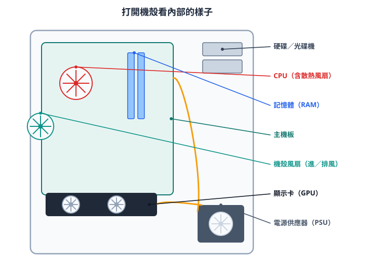
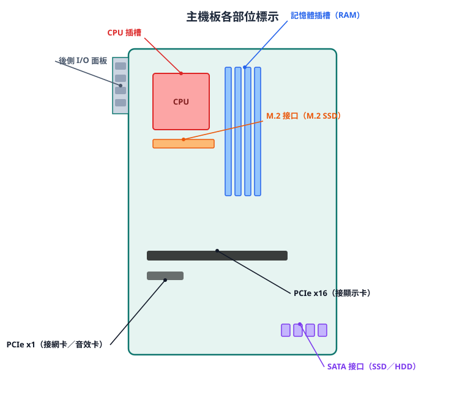
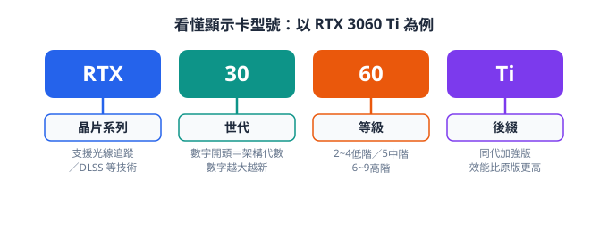
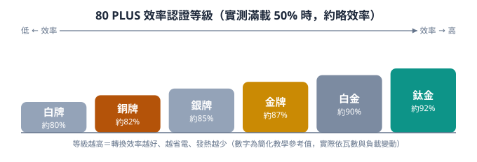
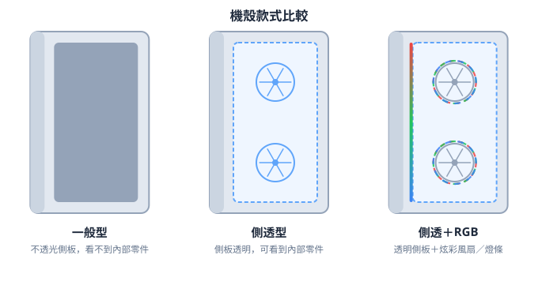
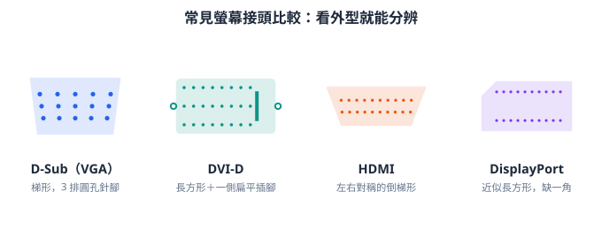

電腦硬體與組裝
主機板、CPU、RAM、顯示卡、儲存裝置
🎯 學習目標
- 認識主機板、CPU、RAM、顯示卡等主要零組件
- 了解各零組件的品牌、規格與等級差異
- 認識 SSD / HDD 的介面與差異
- 建立依需求挑選與組裝一台電腦的觀念
很多電腦零組件與資訊名詞，台灣和大陸的講法不一樣。上網找資料、看影片或逛購物網站時，常會遇到大陸的說法；先認識這些對應名稱，搜尋時才不會卡住。
| 台灣用語 | 大陸用語 | 英文 | 台灣用語 | 大陸用語 | 英文 |
|---|---|---|---|---|---|
| CPU／處理器 | CPU／處理器／芯片 | CPU | 電源供應器 | 電源 | PSU |
| 記憶體 | 內存／內存條 | RAM | 音效卡 | 聲卡 | Sound Card |
| 主機板 | 主板 | Motherboard | 網路卡 | 網卡 | Network Card |
| 顯示卡 | 顯卡 | GPU / Graphics Card | 散熱器 | 散熱器 | Cooler |
| 硬碟 | 硬盤 | HDD | 機殼 | 機箱 | Case |
| 固態硬碟 | 固態硬盤 | SSD |
除了硬體零件，寫程式、上網、用電腦時也常遇到兩岸不同的說法，一併整理如下：
| 🇹🇼 台灣 | 🇨🇳 大陸 | 英文 | 🇹🇼 台灣 | 🇨🇳 大陸 | 英文 |
|---|---|---|---|---|---|
| 軟體 | 軟件 | Software | 資料夾 | 文件夾 | Folder |
| 硬體 | 硬件 | Hardware | 伺服器 | 服務器 | Server |
| 程式 | 程序 | Program | 網路 | 網絡 | Network |
| 程式碼 | 代碼 | Code | 網際網路 | 互聯網 | Internet |
| 演算法 | 算法 | Algorithm | 網頁 | 網頁 | Web Page |
| 函式 | 函數 | Function | 網址 | 網址 | URL |
| 變數 | 變量 | Variable | 介面 | 界面 | Interface |
| 陣列 | 數組 | Array | 快取 | 緩存 | Cache |
| 物件 | 對象 | Object | 雲端運算 | 雲計算 | Cloud Computing |
| 執行緒 | 線程 | Thread | 使用者 | 用戶 | User |
| 行程 | 進程 | Process | 帳號 | 賬號 | Account |
| 資料庫 | 數據庫 | Database | 影片 | 視頻 | Video |
| 資料 | 數據 | Data | 音訊 | 音頻 | Audio |
| 檔案 | 文件 | File |

先打開一台桌機看看裡面有什麼——各個零組件都裝在機殼裡，並接到主機板上：
- 🔌 電源供應器（供電）
- 🧠 CPU（上面有散熱風扇）
- 🟩 主機板（把一切連在一起）
- 🧩 記憶體、🎮 顯示卡、💽 硬碟／光碟機
01主機板 Motherboard

主機板是電腦的中樞，各種周邊都要與它連結才能發揮功能，是 CPU 與外界溝通的橋樑。
圖中標出了各插槽與接口的位置，對照下表就能看懂每個接口是做什麼的。
| 接口 / 插槽 | 用途 |
|---|---|
| PCIe x16 | 主要接顯示卡 |
| PCIe x1 | 接網路卡、音效卡等 |
| CPU 插槽 | 安裝 CPU |
| 記憶體插槽 | 安裝 RAM |
| M.2 接口 | 安裝 M.2 SSD（新、速度快） |
| SATA 接口 | 接 SATA SSD / HDD（舊） |
- 品牌：華碩、技嘉、微星、華擎
- 晶片組等級（低→高）：Intel 為 B → H → Z；AMD 為 A → B → X
- 板型：特大、大板、小板、迷你板
主機板型號怎麼看？通常是「品牌＋系列＋晶片組＋板型」拼起來。以 華碩 TUF GAMING B760M-PLUS 為例：
- 華碩＝品牌、TUF GAMING＝產品系列。
- B760＝晶片組（開頭字母代表等級：Intel 由低到高
H → B → Z；AMD 為A → B → X），數字越大通常越新。 - 型號裡的 M＝板型是 mATX 小板（沒有 M 多半是 ATX 大板、I 則是 ITX 迷你板）。
什麼是「腳位（插槽 / Socket）」？就是 CPU 插進主機板的那個座，上面有成千上百個接點。CPU 的腳位一定要和主機板一樣才裝得上——買 CPU 和主機板必須「配對」，不能亂配。近年常見腳位：
| 品牌 | 近年主要腳位 | 搭配的 CPU（例） |
|---|---|---|
| Intel | LGA 1851（新）、LGA 1700 | Core Ultra 200 系列 / 12～14 代 |
| AMD | AM5（新）、AM4 | Ryzen 7000／9000 / Ryzen 5000 |
所以挑機的順序常是：先決定 CPU → 看它的腳位 → 再挑「同腳位、晶片組等級合適」的主機板。（整理自歐飛先生「主機板的選購與推薦」）
02CPU 中央處理器

AMD Ryzen 9 桌上型處理器正面
CPU 是電腦的運算核心。市面上主要有兩大品牌，各自有由低（入門）到高（高階）的產品線：
🔵 Intel
目前（2024 年起）改用 Core Ultra 命名：
Core Ultra 5 → Ultra 7 → Ultra 9（例：Ultra 7 265K）
舊命名（前幾代）：Core i3 → i5 → i7 → i9
🔴 AMD
Ryzen 5 → Ryzen 7 → Ryzen 9
目前為 9000 系列（Zen 5）；遊戲最強是 X3D 版，如 Ryzen 7 9800X3D
看懂型號後面的英文字母（尾碼）
CPU 型號後面的字母代表它的功能定位，挑選時很重要：
🔵 Intel 常見尾碼
| 尾碼 | 意義 |
|---|---|
| K | 不鎖倍頻、可超頻（如 Core Ultra 7 265K） |
| F | 沒有內建顯示晶片，一定要搭獨立顯卡（如 Ultra 5 245F） |
| U | 筆電專用，極低功耗 |
🔴 AMD 常見尾碼
| 尾碼 | 意義 |
|---|---|
| X | 標準效能版，頻率通常較高 |
| X3D | 內建大容量快取（3D V-Cache），遊戲效能最強（如 9800X3D） |
| F | 沒有內建顯示晶片，要搭獨立顯卡 |
看到 F（Intel）或 F（AMD）結尾＝沒有內顯，這台電腦就一定要裝獨立顯卡才有畫面；其餘型號多半有內顯，文書、上網、看影片不必另外買顯卡。
上表的 K（Intel）、X（AMD）代表「不鎖頻、可超頻」。超頻是指把 CPU 的運作頻率手動調得比原廠更高、以換取更多效能；以前很多電腦玩家很愛這樣做，還會特地挑這類型號。
不過在現在的 CPU 上，超頻已經「吃力又效果有限」：新款 CPU 出廠就會自己偵測溫度與功耗、動態把頻率衝到接近極限（Intel 的 Turbo Boost、AMD 的 Precision Boost），手動超頻能再多擠出的效能通常只有幾個百分比，卻要付出更多發熱、更吵的散熱、更耗電，還得多花錢買高階主機板和強力散熱器，穩定性也可能變差。所以對大多數人（文書、上網、甚至一般遊戲）來說，維持原廠設定就很夠用，不必為了超頻硬去追 K／X 型號。（參考：XDA、ASUS Edge Up 等 2025 年評析）
03RAM 主記憶體與顯示卡
🧩 RAM 主記憶體

DDR5 記憶體實體照
品牌：美光、金士頓、威剛、芝奇、十銓、海盜船等。
容量：4G、8G、16G、32G…（越大越能同時開多個程式）。
🎮 顯示卡

- GPU 晶片廠：NVIDIA、AMD
- 板卡品牌：華碩、技嘉、微星等
- 等級（看型號中間數字）：2~4 低階、5 中階、6~9 高階
- 世代：目前是 DDR5（新）與 DDR4（舊），兩者不相容，要看主機板支援哪一種。
- 時脈（頻率）：
DDR5-6000、DDR4-3200後面那個數字，代表每秒能傳幾次資料，數字越大越快（單位 MT/s，口語常說成 MHz）。 - CL（CAS Latency，延遲）：
CL30、CL16代表「收到指令到吐出資料」要等幾個週期，數字越小反應越快。 - 時脈和 CL 要一起看：時脈高的記憶體 CL 通常也比較大，實際快慢是兩者綜合。一般人不用太糾結 CL——先選對 DDR 世代、挑主機板／CPU 支援的時脈就好。
- 雙通道：插兩條一模一樣的記憶體（例如 16G×2），頻寬加倍，比單一條 32G 更順，對內顯和遊戲特別有感。所以買 32G 常建議「16G×2」而不是「單條 32G」。
整理自歐飛先生「RAM 記憶體的選購與推薦」。
把 AI 大型語言模型（像 ChatGPT 那種，簡稱 LLM）下載到自己電腦離線跑，非常吃記憶體——模型的「參數量（B＝十億）」越大越吃。粗略門檻（會因「量化壓縮」而變動）：
| 模型大小 | 大約需要的記憶體 | 感覺 |
|---|---|---|
| 約 7B（70 億參數） | 8～16 GB | 入門，一般筆電勉強可跑 |
| 約 13B | 16～32 GB | 要中高階機器 |
| 30B 以上 | 32 GB 以上 | 要高階、記憶體要很大 |
如果改用顯示卡跑（快很多），吃的就是顯示卡的記憶體（VRAM）。所以想玩本地 AI，系統 RAM 和顯卡 VRAM 都要大——這也是近年大家買電腦越來越在意記憶體容量的原因之一。
04儲存裝置：HDD 與 SSD
💽 HDD 傳統硬碟

拆開外殼的傳統硬碟，可看到碟片與讀寫磁頭
- 品牌：Seagate（希捷）、WD（威騰）、Toshiba（東芝）
- 依用途分：家用型（三年保）、企業型（五年保）、監控型、NAS 型
⚡ SSD 固態硬碟

一條 M.2 2280 規格的 NVMe 固態硬碟
- 儲存顆粒（壽命/成本）：SLC → MLC → TLC → QLC
- 沒有機械結構，較耐震、安靜、省電
三種儲存裝置比較
| 項目 | 傳統硬碟 HDD | SATA SSD | M.2 NVMe SSD |
|---|---|---|---|
| 介面 | SATA | SATA | M.2 |
| 通道 | SATA（窄） | SATA（窄） | PCIe（寬） |
| 協議 | AHCI | AHCI | NVMe |
| 讀取速度（約） | 100～200 MB/s | 約 500 MB/s | 3500 MB/s 以上 |
| 運作原理 | 碟片旋轉＋磁頭（機械） | 快閃記憶體（無機械） | |
| 優點 | 容量大、最便宜 | 比 HDD 快、耐震 | 最快、體積最小 |
| 缺點 | 慢、怕震、有噪音 | 比 NVMe 慢 | 單位容量較貴 |
HDD ＜ SATA SSD ＜ M.2 NVMe SSD。從 HDD 換成 NVMe SSD，開機和開程式的速度感受最明顯。
為什麼硬碟速度會影響開機？因為作業系統（Windows 等）的所有檔案本身就存放在硬碟裡。每次開機，電腦要先把作業系統的資料從硬碟讀出來、載入到記憶體（RAM），CPU 才能執行它、讓畫面進入桌面；開啟每個程式也一樣——程式檔存在硬碟，要先被讀進記憶體才能跑。所以硬碟讀取越快，開機和開程式就越快，這也是換上 NVMe SSD 後感受最明顯的原因。
開機
螢幕進入桌面
硬碟＝長期存放資料的地方（斷電也還在）；記憶體（RAM）＝執行時暫時放資料的地方（速度快、斷電就清空）。
05電源、機殼與螢幕
🔌 電源供應器

- 常見瓦數：450／550／650／750／850W
- 等級越高越省電、用料通常越好
怎麼選瓦數／等級？
- 文書機（無獨顯）：450～550W、白牌／銅牌就夠
- 中階遊戲機（有獨顯）：650～750W、銅牌～金牌
- 高階／高瓦顯卡：750W 以上、金牌以上較穩
🗄️ 機殼

- 款式：一般型、側透型、側透 +RGB
- 規格：ATX、mATX
買機殼要看能不能裝下你的主機板：
・ATX 機殼：可裝 ATX 大板（約 30.5 × 24.4 cm）
・mATX 機殼：裝 mATX 小板（約 24.4 × 24.4 cm）
大機殼通常能裝小板，反過來則不行。
🖥️ 螢幕

- 面板色彩：IPS ＞ VA ＞ TN
- 反應速度：TN ＞ IPS ＞ VA
- 解析度：常見 1920×1080（Full HD）
- 更新率：電競建議 120Hz 以上
- 接頭：建議具備 HDMI／DP
把零件裝進機殼時，有幾個新手常忽略的重點：
- 先鎖銅柱（螺柱）：機殼底板要先鎖上對應主機板孔位的銅柱，主機板才不會直接碰到金屬短路。
- 先裝「I/O 擋板」：主機板後端的金屬擋板要先卡進機殼背面，再放主機板進去。
- CPU 對三角記號：CPU 有一個小三角形，要對準插槽的三角形方向，輕放不要硬壓，以免壓歪針腳。
- 記憶體壓到「喀」一聲：對準缺口、兩邊平均施力壓到卡扣扣上；裝兩條要插「隔一槽的同色插槽」才是雙通道。
- 顯示卡要鎖螺絲：插進 PCIe x16 後，記得鎖上機殼背檔的螺絲固定，別讓顯卡下垂。
- 電源線要接齊：主機板 24-pin、CPU 8-pin、顯卡 8-pin(6+2) 都要接上，少接一個就開不了機。
- 理線與風扇方向：線盡量走背板整理，風扇注意「前面吸、後面／上面吹」的風道。
- 開機前再檢查一次：確認沒有螺絲掉在板子上、線都接好，再通電。
（可搭配本頁最下方「需求分析與組裝」的相容性提醒一起看。）
認識兩種主流螢幕接頭：HDMI 與 DP
📺 HDMI
最普及的影音接頭，影像＋聲音一條線搞定。電視、螢幕、遊戲機幾乎都有，接電視、投影機很方便。
🖥️ DisplayPort（DP）
電腦與顯示卡上更常見，高解析度、高更新率（如 2K/4K 144Hz 以上）表現通常更好，打電競、接多螢幕常用它。

HDMI 接頭：左右對稱的倒梯形

DisplayPort 接頭正面：有一角是斜切的（缺一角）
看接頭形狀就能分辨：HDMI 左右對稱、DP 缺一角。（兩張圖皆取自 Wikimedia Commons，可自由使用，沒有版權疑慮）
HDMI 由幾家消費電子大廠主導，廠商每年要付授權金（權利金）。於是電腦業界的 VESA 組織在 2006 年推出 DisplayPort，主打「免權利金」的開放標準，用來取代老舊的 VGA／DVI，也讓電腦廠不必再付 HDMI 授權費——這就是 DP 出現的主因。
說法來源：DisplayPort vs HDMI 比較（新基科技、EcLife 等）；DisplayPort 為 VESA 於 2006 年發布的免權利金標準。
06需求分析與組裝專題
組裝一台電腦前，先做需求分析：這台電腦要拿來做什麼？再依需求與預算配置零組件。
| 用途 | 配置重點 |
|---|---|
| 文書上網 | CPU 內顯即可、16GB RAM（8GB 已偏緊）、NVMe SSD；不需獨立顯卡 |
| 遊戲電競 | 中高階獨立顯卡（如 RTX 5060 以上）、16～32GB RAM（32GB 逐漸成主流）、高更新率螢幕（144Hz 以上） |
| 影音剪輯 / 繪圖 | 多核心 CPU、32GB 以上 RAM、大容量高速 NVMe SSD；建議搭獨立顯卡做 GPU 加速 |
※ 依 2026 年市場現況調整：文書機的 RAM 已從 8GB 提升到 16GB 較安心；遊戲／剪輯的 32GB 正逐漸成為新標準，NVMe SSD 也幾乎是標配。（參考：歐飛先生、無尾熊電腦、renjoyit 等 2026 組裝指南）
組裝時注意：CPU 與主機板腳位相容、電源瓦數足夠、記憶體與主機板相容、機殼容納得下顯示卡長度。
本單元不少「怎麼挑、怎麼配」的觀念，參考了台灣知名的電腦組裝部落格 歐飛先生（他有很多新手向的選購與組裝問答）。想深入的同學可以去看看：歐飛先生 痞客邦部落格 ↗（主機板、RAM、顯卡、每月組裝菜單等都有整理）。
✏️ 課堂練習
- 顯示卡通常安裝在主機板的哪個插槽？
- M.2 NVMe SSD 與 SATA SSD，哪個速度較快？
- Intel 目前的 Core Ultra 處理器，由低到高排列：Ultra 9、Ultra 5、Ultra 7，正確順序是？
- CPU 型號結尾是 F（例：Ultra 5 245F）代表什麼？裝機時要注意什麼？
- 幫「只用來文書上網、看 YouTube／Netflix」的長輩配一台電腦，需要加獨立顯卡嗎？為什麼？
- PCIe x16。
- M.2 NVMe SSD。
- Ultra 5 → Ultra 7 → Ultra 9（數字越大越高階）。
- F ＝沒有內建顯示晶片，所以這台電腦一定要另外裝獨立顯卡才有畫面。
- 不用加獨立顯卡。現在的 CPU 大多內建顯示（內顯），播 YouTube／Netflix、甚至 4K 影片、文書上網都沒問題；獨立顯卡主要是給遊戲、3D 繪圖、影片剪輯用的。把省下的錢放在 SSD 或 RAM 更有感。（但若選到結尾 F 的 CPU 就沒內顯，那就非裝獨顯不可。）
🖥️ 哪些 CPU 的內顯就能應付 4K 影音？（截至 2026 年 7 月）
- Intel：Core Ultra 200 系列（內建 Arc 內顯）、以及較新一代帶內顯的 Core／Core Ultra（非 F 版），都可輸出並硬體解碼 4K 影片。
- AMD：Ryzen 8000G 系列、以及 Ryzen 7000／9000 帶 Radeon 內顯的型號（非 F 版），同樣支援 4K 影音。
- 更省的選擇：其實只要「有內顯」，連入門的 Intel UHD、AMD Radeon 內顯都能靠硬體解碼順播 4K 串流——文書＋看影片用這種就非常夠。
▶ 🎬 延伸：如果改成要「剪輯影音」，先加強顯示卡還是記憶體？（點開）剪影片和「文書上網」正好相反——它三個都吃：CPU、記憶體、顯示卡。真要排優先順序：
- ① 先把記憶體補到 32GB：剪輯（尤其 4K、開多軌、上特效）很吃 RAM，不夠會卡頓、預覽不順。這通常是第一個瓶頸，所以「記憶體」先顧。
- ② CPU 要多核心、SSD 要大又快：輸出（算圖）主要靠 CPU 核心數；素材放在大容量 NVMe SSD 讀取才快。
- ③ 顯示卡負責「加速」：剪輯軟體（Premiere、DaVinci）會用顯卡做即時預覽、特效與輸出加速，中階獨顯就很有感，預算夠再往上升，對輸出速度幫助明顯。
一句話：先讓「記憶體（32GB）＋ 多核 CPU ＋ 大容量 NVMe」到位、避免卡頓，再用一張中階以上的獨立顯卡加速預覽與輸出。（觀念整理自歐飛先生等組裝建議）
🛒 組裝估價器（點開使用）
把「現在價」填成原價屋今天的價格，下面會即時算出一月總價、現在總價與價差，用來比較同規格現在變貴還是變便宜。
預設放入的是老師 2026 年 1 月的實際配單（當時總報價 32,719 元，含稅）。「你的一月價」是當時的成交價；「現在價」請自己到原價屋查今天同規格的價格填進去，下面會自動算出兩邊的總價與價差，就能比較同規格現在是變貴還是變便宜。（預設「現在價」先等於一月價，改了才會看到差額。）
| 計入 | 類別 | 品項／規格 | 你的一月價 | 現在價（原價屋） | |
|---|---|---|---|---|---|
| 元 | 元 | ||||
| 元 | 元 | ||||
| 元 | 元 | ||||
| 元 | 元 | ||||
| 元 | 元 | ||||
| 元 | 元 |